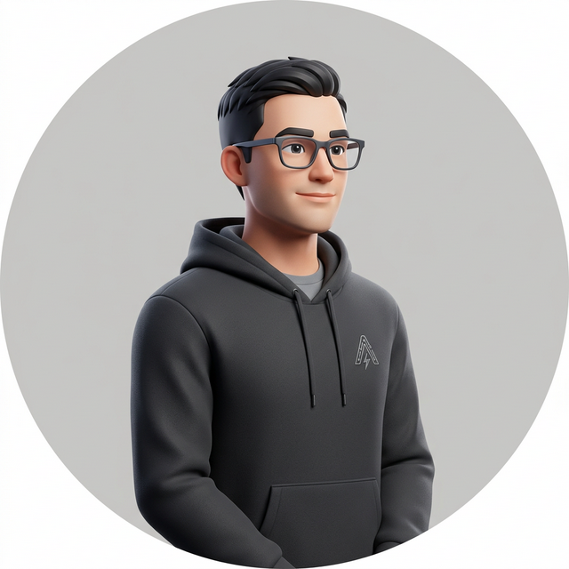

总评论数
样本量极低
平均评分
行业基准线以下
数据沉默率
解析失败/无有效内容
已打标评论
成功率 0%
在随机样本中表现出极高的功能一致性，无质量瑕疵投诉，为品牌升级提供稳固底座。
产品实际表现与详情页描述高度契合，供应链品控稳定，有效降低了消费者的失落感。
用户对产品缺乏情感投入，导致评论内容极度空洞，心智占位处于完全透明状态。
产品缺乏足以让用户产生分享冲动的亮点或创新点，无法形成口碑裂变与自发传播。
| Urgency | Directive | Strategic Details | Expected ROI |
|---|---|---|---|
| Immediate | 视觉与包装重构 | 在产品包装中增加品牌故事或独特的视觉元素，打破中立沉默，植入开箱 Aha Moment。 | 提升高质量评论留存率 |
| Short-Term | 评论激励计划 | 通过合法渠道引导用户针对耐用性和特定使用场景进行深度反馈，解决数据静默危机。 | 获取结构化标签，优化广告投放 |
| Long-Term | 细分市场心智占领 | 将产品定位从通用型转向极简主义或特定低频场景，建立差异化壁垒，摆脱价格内卷。 | 建立品牌溢价能力与用户忠诚 |

"其工业设计与内部堆料确实达到了行业第一梯队水平..."
该用户代表了高感知度的极客圈层。对硬件堆料的高度认可是品牌溢价的核心基石，建议在 A+ 页面及社媒营销中强化拆解图与硬核技术指标，放大该圈层的口碑效应。
"在关键的会议场合出现了断连，这对于专业人士来说是不可接受的。"
核心商务场景的断连是致命伤，直接导致高净值用户信任破裂。此反馈属于最高优 P0 级预警，需立即协同研发排查特定环境下的固件稳定性，并主动提供高规格售后挽回。
"平时用着还行，就是没什么特别惊艳的地方。"
典型的“数据静默”群体代表。缺乏 Aha moment 使产品沦为平庸的代名词。亟需通过 CMF 设计微创新或极具仪式感的包装设计，提升开箱惊喜感，将中立态度转化为品牌偏好。
"固件更新非常及时，这就是我选择该品牌的理由。"
软硬件结合的持续售后体验是维系硬核用户的关键护城河。固件的更新频率与响应速度可提炼为隐性卖点，在详情页中作为“长期价值承诺”进行宣发，构建品牌信任壁垒。